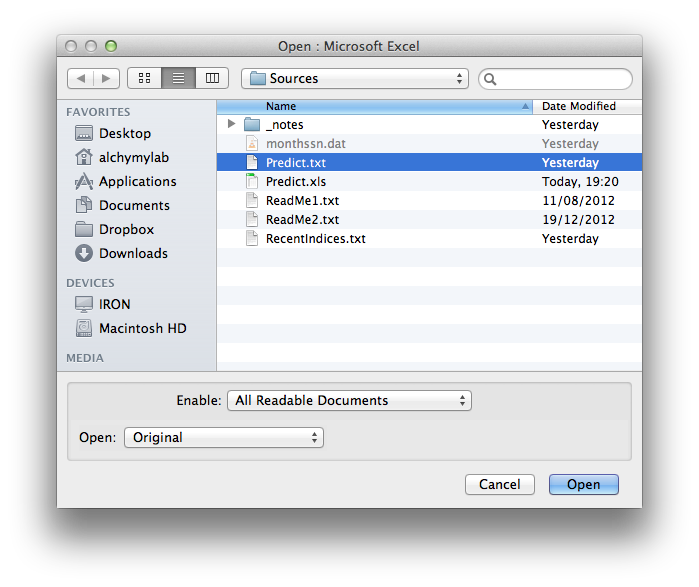
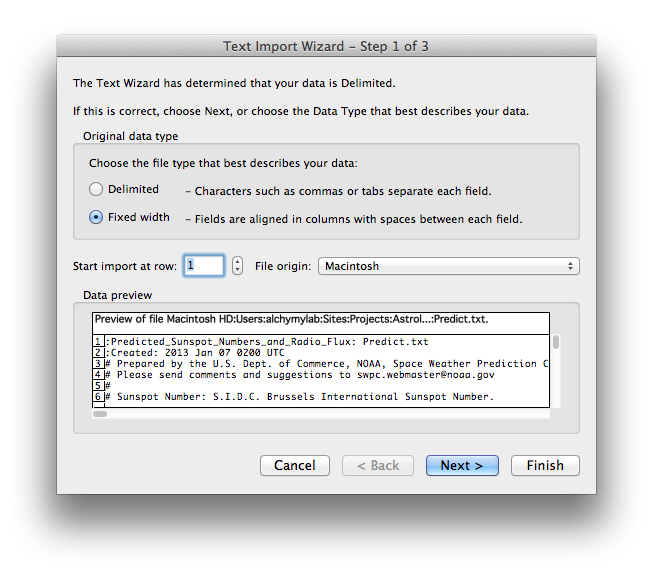
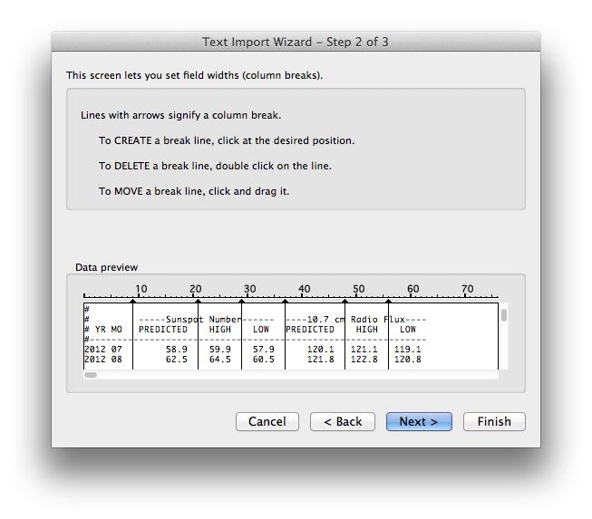

| Import 'Predict.txt' |
Importing predict.txt into Excel / Open Office Sunspot data files.
Using Excel - File / Open - and select Predict.txt

Then open the text file, Excel will prompt for import.

Insert lines to separate columns for import. Once imported file can be saved as Predict.xls and the columns copied and pasted into the main data sheet.
